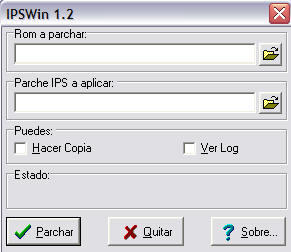

GUÍA DE TRADUCCIÓN DE ROMS
Por DaRKWiZaRDX
APLICAR PARCHES IPS
En este -corto- apéndice aprenderás cómo aplicar un parche IPS a una ROM, los
parches son los archivos con extensión *.ips que bajas de internet con una
traducción o un hack de un juego.
Para parchear un juego necesitas:
- La ROM original (es decir, sin modificar).
- El parche (duh).
- IPSWin / Segatool / Snestool o cualquier otra herramienta para aplicar parche
(aquí usaré IPSWin y (Sega/Snes)tool)
IPSWin:
1. Abre el programa, aparecerá una ventana como la siguiente:

2. En el primer cuadro debe ir la ruta completa de la ROM original. En la
segunda la ruta hacia el parche IPS.
3. Si lo deseas marca el primer checkbox para que haga una copia de seguridad de
la ROM antes de aplicar el parche.
4. Dale a "Parchar", espera un poco (generalmente segundos) y la ROM estará
parcheada.
(SEGA/SNES)TOOL
1. Abre el programa. Te aparecerá algo como esto:

2. Elige "Use IPS".
3. Cuando te diga "Select IPS" selecciona con el cursor en el menú a la
izquierda el parche.
4. Cuanto te pida la ROM elige del menú a la izquierda la ROM.
5. Espera un poco (menos que con el IPSWin por ser este programa de DOS) y la
ROM estará parcheada.
Estas son las instrucciones básicas, es realmente muy fácil, y lo mejor es
que el distribuir parches por internet no es ilegal, solo el distribuir las ROMs
lo es. =D
Volver al índice